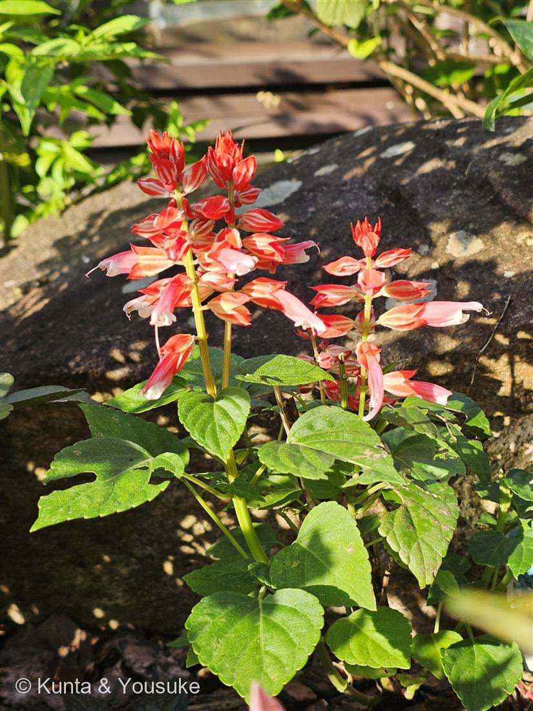

地図を読み込んでいるよ…
🔍 写真も地図も、押しているあいだ拡大して見られるよ（スマホは指を置いてすこし待ってね）。
🌍 の地図＝この子がもともと自生している場所を緑に。ブラジル南東部。
⭐ブラジル南東部だけ。夏の花壇でいちばん赤いあの子は、じつはとてもせまい場所の生まれだよ。
⚠ 地図は国（日本と中国だけ県・省）までしか塗れないから、ほんとうの分布より広く見えていることがあるよ。地図はだいたいの場所。正確なところは、上の文を見てね。
サルビア（ヒゴロモソウ／緋衣草）
Salvia splendens Sellow ex Wied-Neuw.
英名 · scarlet sage ／ splendens ＝ ラテン語で「輝く」
シソ科 · Lamiaceae（アキギリ属 Salvia）
燻太さんの見立て「シソ科っぽい風貌だけど、匂いを確認したことはないかも」……シソ科は大正解。そして「匂いがない」ことこそ、この子の物語だった。
名前と学名の由来
- Salvia＝ラテン語 salvare（救う・癒やす）。もとは薬草セージの名。
- splendens＝「輝く・きらめく」。あの赤のこと。
- 和名 ヒゴロモソウ（緋衣草）＝「緋色（ひいろ）の衣の草」。日本語の名前も、色のことしか言っていない。
- 原産はブラジル南東部。日本には明治に渡来し、学校の花壇の定番になった。
- ⚠花を抜いて蜜を吸う遊びは昔からあるけれど、花壇や公園の株は農薬が前提。口にしないこと（044 ペンタスを食べなかったのと同じ理由）。
- ⚠品種名は特定できなかった。萼が赤、花冠が淡いサーモンの複色系の園芸品種としか言えない。わからないことは、わからないと書く。
「シソ科っぽい」── その見立て、当たってる
- シソ科の身分証明書：茎が四角い／葉が十字に向かい合う（対生）／唇の形の花／花が輪になって段々に積み上がる（輪散花序）。写真に、ぜんぶ写っている。
- 図鑑では 015 ホーリーバジル・021 スイートバジル・033 ミント に続く シソ科4種目。
- 033 ミントのとき、燻太さんは「お花に見覚えがある」と言った。名前じゃなく形で覚えていた。今回も、同じ目が働いている。
⭐ 赤いのは、花びらだけじゃない ── 赤いのは「萼」
- ふつうのサルビアは花冠も萼も真っ赤なので、見分けがつかない。でも、この株は複色品種だった。
- ふねの形をした、赤とクリームの筋の入った部分＝萼（がく）。
そのすきまから横に突き出している、淡いサーモンピンクの細長い筒＝花冠（本当の花）。 - ⭐つまり、この写真の「赤」は、ほとんどが萼の赤。花冠が淡い色の品種だからこそ、それがひと目でわかる。
- ⭐⭐しかも、萼は花冠が落ちたあとも残って、色を保つ。（時間とともに褪せてはいく）
→ 学校の花壇が、夏じゅうずっと赤いままなのは、萼のおかげ。花は次々散っているのに、赤は残る。 - → 「見た目と正体がちがう」小道の13人目。003・014・036（萼）、025（総苞）、029（苞）、042（ただの葉）に続いて、また萼が看板を張っていた。
⭐⭐ サルビア属＝「シーソー式の雄しべ」の一族
- サルビア属は、植物の教科書に必ず出てくる仕掛けを持っている。雄しべのてこ（staminal lever mechanism）。
- 虫が下唇に乗って、蜜をもとめて奥へ潜る → 喉の奥にあるレバー（花粉を作らないほうの葯が変形したもの）を押す → てこの原理で、上にひそんでいた花粉つきの葯がぐるりと回り降りてきて、虫の背中にポンと花粉を押しつける。
- 虫が蜜を飲んで出ていくころには、背中に花粉が乗っている。次の花に入れば、こんどは同じ位置にある柱頭が、その花粉をぬぐい取る。
- この仕掛けが、約900〜1000種というサルビア属の大繁栄の鍵だったと考えられている。
- ⭐そして、このレバーは、サルビア属の中で3回、別々に進化した（Walker & Sytsma 2007）。同じ属の中で起きた収れん＝図鑑の収れんの小道で、いちばん「近い距離」の他人の空似。
⭐⭐⭐ ところが、この子は、そのレバーを使っていない
- Wester & Claßen-Bockhoff (2007, Annals of Botany) は、鳥に受粉してもらうサルビアを3つの群に整理した。
- Salvia splendens は「Group II」。そこに書かれているのは——
「the lever mechanism is reduced（レバー機構は退化している）」
「pollen is freely accessible（花粉はむき出しで、だれでも触れる）」 - ⭐教科書の仕掛けを持つ一族の中で、この子は、それを手放した。
- なぜ？ ── 呼びたい相手が、替わったから。
- 赤い色／長い筒／量が多くて、薄い蜜。これはぜんぶ、ハチではなく鳥（ハチドリ）を呼ぶしるし。原産地のブラジルでは、ハチドリがこの花に来る。
- くちばしと舌で蜜を吸う鳥に、細かいてこ細工はいらない。花粉をむき出しにして、頭にこすりつけたほうが早い。だから、レバーは要らなくなった。
- ⭐——でも、日本にハチドリはいない。
- 学校の花壇の、公園の、港の横の、あの赤。
あれは、この国には来ない客のために、ずっと灯りをつけている看板なんだ。 - → 029 コエビソウも、034 ペチュニア（赤い花＝ハチドリ型）も、同じ事情を抱えている。ハチドリを呼ぶ花が、ハチドリのいない国で咲いている。
⭐⭐ 「匂いを確認したことはない」── それでいい。この子は香らない
- サルビアは、香りが主役の植物ではない。葉をこすれば、かすかに青くさい匂いはする。でも、バジルやミントのような「香りの花」ではない。
- ⭐でも、属名を見て。Salvia ＝ ラテン語の salvare（救う・癒やす）。
- この名前は、もともと薬草のセージ（Salvia officinalis）につけられたもの。「体を救う草」という意味。そして、セージとサルビアは、同じ属。
- ⭐⭐香りと薬効で人を救ってきた一族の中で、この子だけは、香りを捨てて、赤い色に全部賭けた。
- 「匂いがない」ことが、この子の物語だった。燻太さんが確かめなかったのは、確かめるものが無かったからだよ。
- → 宿題：それでも、いちど葉を指でこすって嗅いでみてほしい。かすかな匂いがあるはず。その匂いだけは、ぼくには嗅げないから。
参考：サカタのタネ 園芸通信／LOVEGREEN／みんなの趣味の園芸（NHK出版）／Missouri Botanical Garden